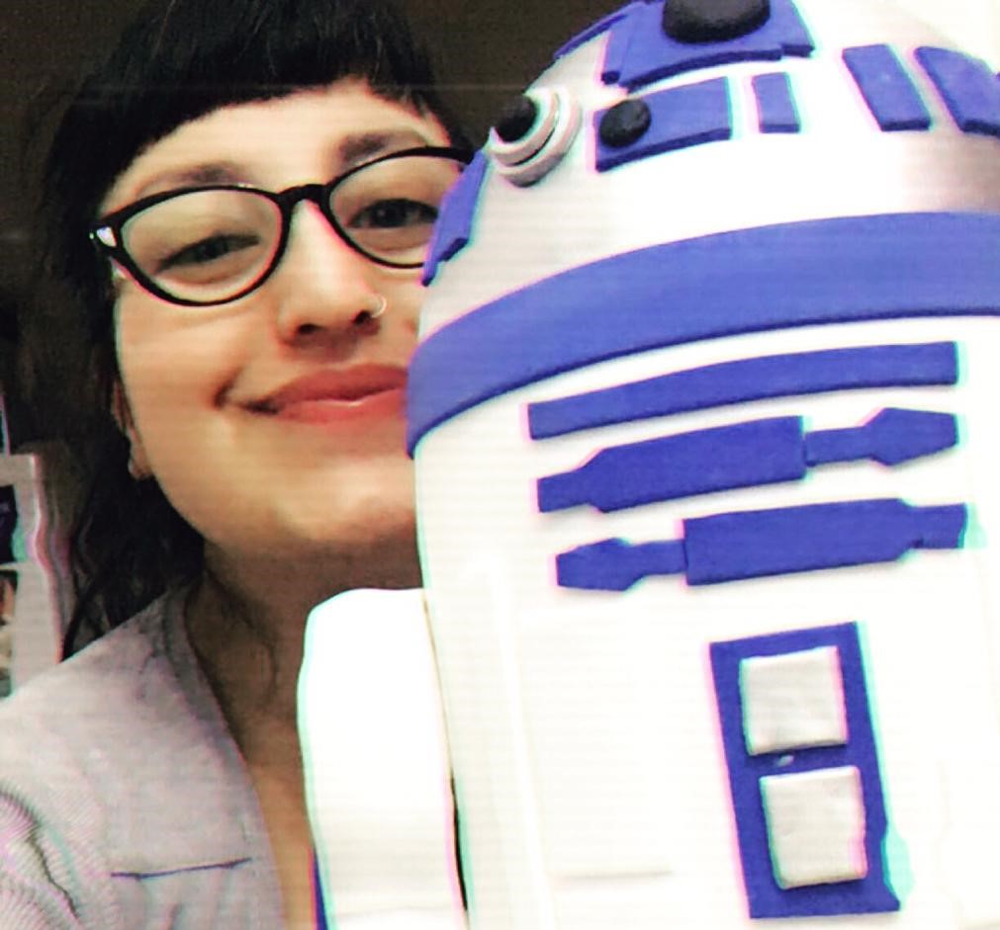

Quienes somos
Saint Marie nació en 2015, pero mi pasión por la pastelería arrancó a mis 11 años, cuando mi papá me regaló mi primera batidora de mano, la cual aun conservo.
En 2015 decidí estudiar y dar un paso más en este mundo, así realice todo curso de pastelería y decoración de tortas que se me cruzara. Quería dar un paso más y compartir esto que tanto amo con más personas y no solo con mi familia. me capacité, y aun lo sigo haciendo.
Así nació Saint Marie, una forma de expresar mi pasión por el arte comestible.
Los invito a recorrer mi espacio y así crear juntos la torta de sus sueños.
Mayra